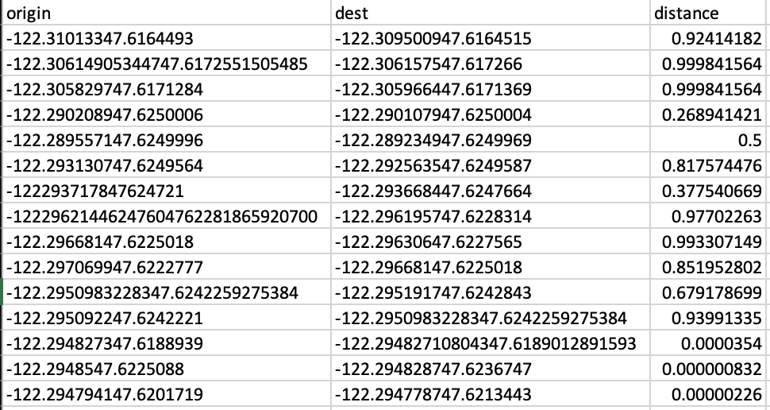

Learning Objectives
- Implement the Dijkstra's shortest path algorithm.
- Apply the shortest path concept to real-world accessibility.
- Understand data querying and cleaning.
Introduction
Project Sidewalk is an open-source web-based tool designed to collect street-level accessibility data through crowdsourcing, involving both volunteers and paid workers. Its primary function is to enable users to annotate "street segments" with valuable sidewalk accessibility information, including details about curb ramps, missing or present, obstacles, surface problems, and the absence of sidewalks.
Dijkstra's Shortest Path Algorithm

(Figure 1) Dijkstra's Shortest Path Algorithm, from Medium.
Dijkstra's shortest path algorithm is a method used to find the shortest path between two nodes in a graph. Imagine you have a map with multiple locations and you want to determine the most efficient way to travel from one location to another. Dijkstra's algorithm helps you find this optimal path by considering the distances between nodes and gradually exploring the graph.
The algorithm starts by assigning a tentative distance value to each node in the graph, with the initial node having a distance of 0 and all other nodes having an initial distance of infinity. Then, it selects the node with the smallest tentative distance and examines its neighboring nodes.
For each neighboring node, the algorithm calculates the total distance from the initial node through the current node. If this calculated distance is smaller than the current tentative distance assigned to the neighboring node, the tentative distance is updated with the smaller value.
The algorithm continues this process, iteratively selecting the node with the smallest tentative distance and exploring its neighbors, updating the tentative distances as necessary, until all nodes in the graph have been visited or the destination node has been reached.
Once the algorithm completes, the shortest path from the initial node to any other node in the graph can be determined by following the sequence of nodes with the smallest tentative distances.
Assignment
In this assignment, your task is to implement Dijkstra's Single-Source Shortest Paths algorithm using a Graph class provided to you. Specifically, you will be working on the ShortestPaths class, where you will write methods to execute Dijkstra's algorithm, reconstruct the shortest paths once the algorithm has run, and develop a command-line program capable of computing the shortest paths on a graph read from a test file.
The main method in the ShortestPaths class has the ability to read directed graphs from two types of text files: "basic" and "db". When a "db" file is provided, the DBParser class will parse a Graph from a CSV file containing the actual coordinates of sidewalks (origin and destination) along with their corresponding accessibility scores (distance). In this context, a shortest path indicates the path with the lowest number of accessibility barriers.
(Figure 2) An example of what the CSV file looks like.
Project Plan and Reflection
Each person must write both a project plan named plan.txt and a reflection named reflection.txt. plan.txt must be completed before the start of the project and reflection.txt must be completed before submitting your project.
plan.txt should include the following information:
- A one paragraph summary of the program in your own words. What is being asked of you? What will you implement in this assignment?
- In 2-3 sentence, explain your thoughts on what you anticipate being the most challenging aspect(s) of the assignment.
- A proposed schedule for when you will work on this assignment with your partner and where you will meet.
- A list of at least 3 different resources you plan to use if you get stuck on something.
reflection.txt should include the following information:
- Declare/discuss any aspects of your code that are not working. What are your intuitions about why they are not working? Acknowledge and discuss any parts of the program that appear to be inefficient.
- What are some of the most important lessons you learned while working on this assignment? Why do you think so?
- What was the most challenging aspect of this assignment? Why?